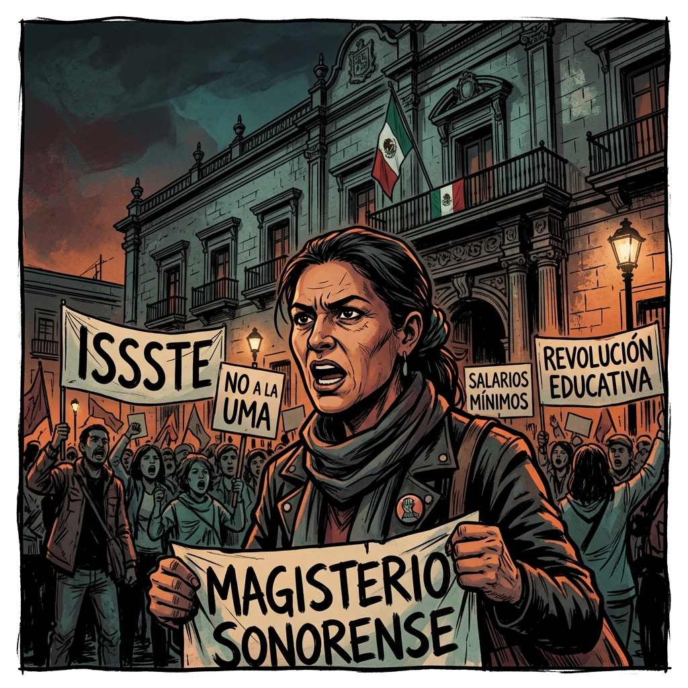
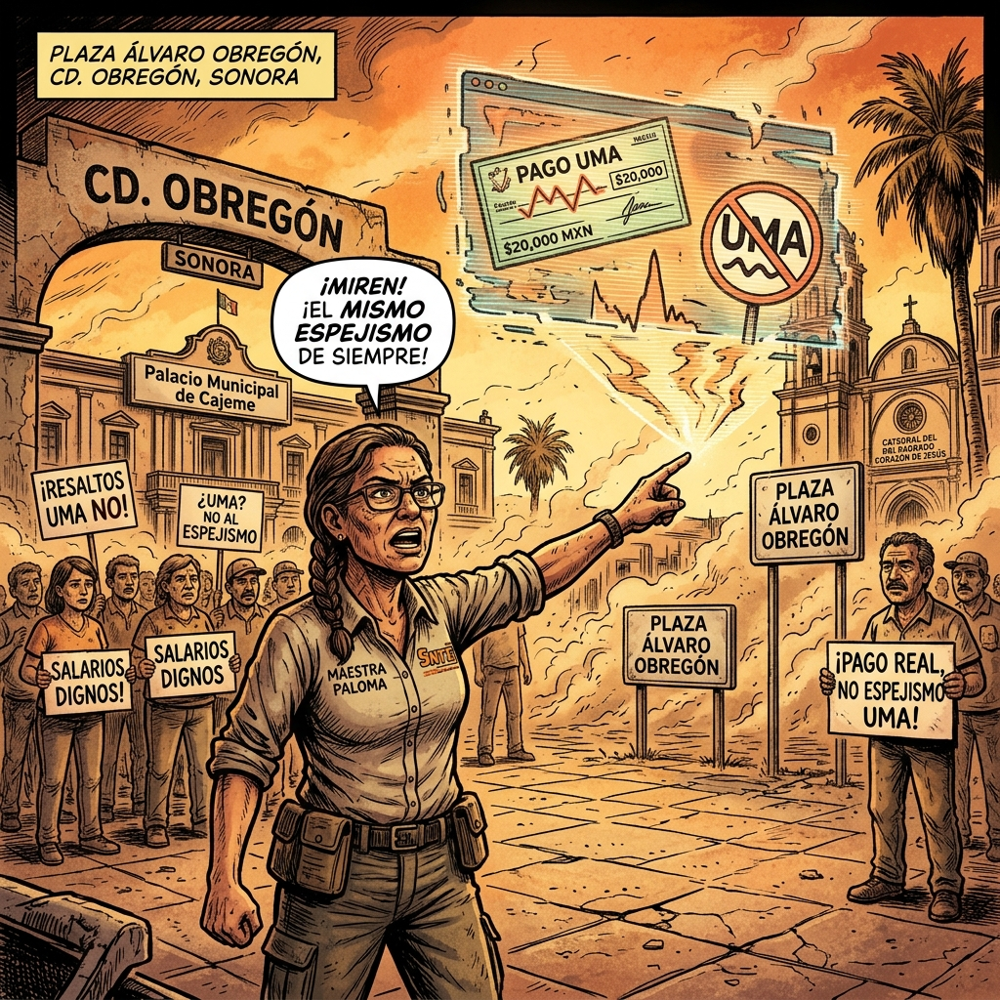
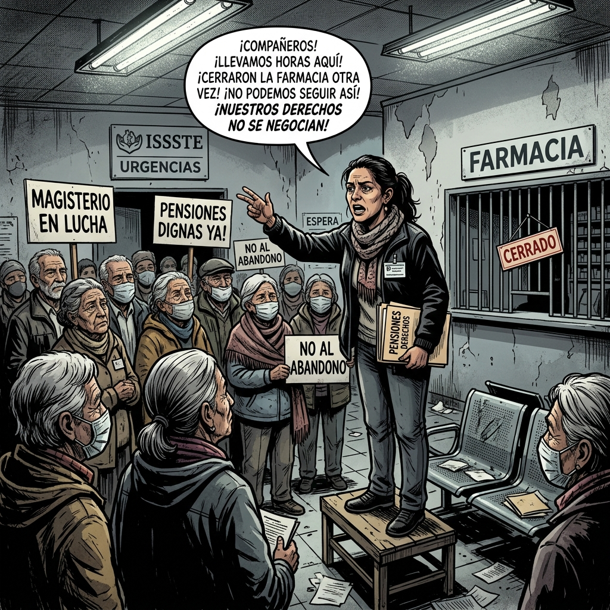
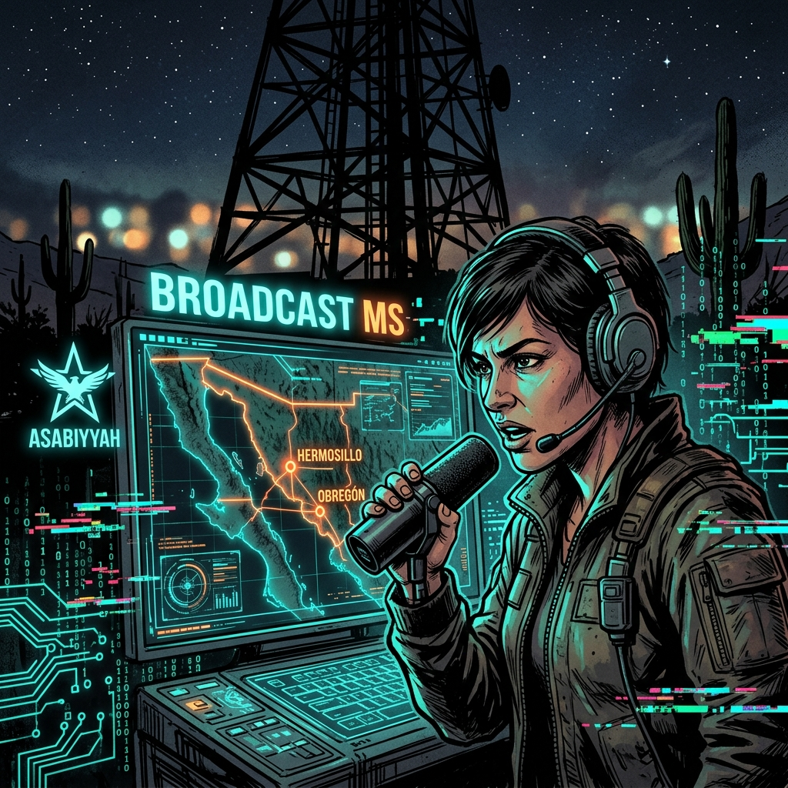
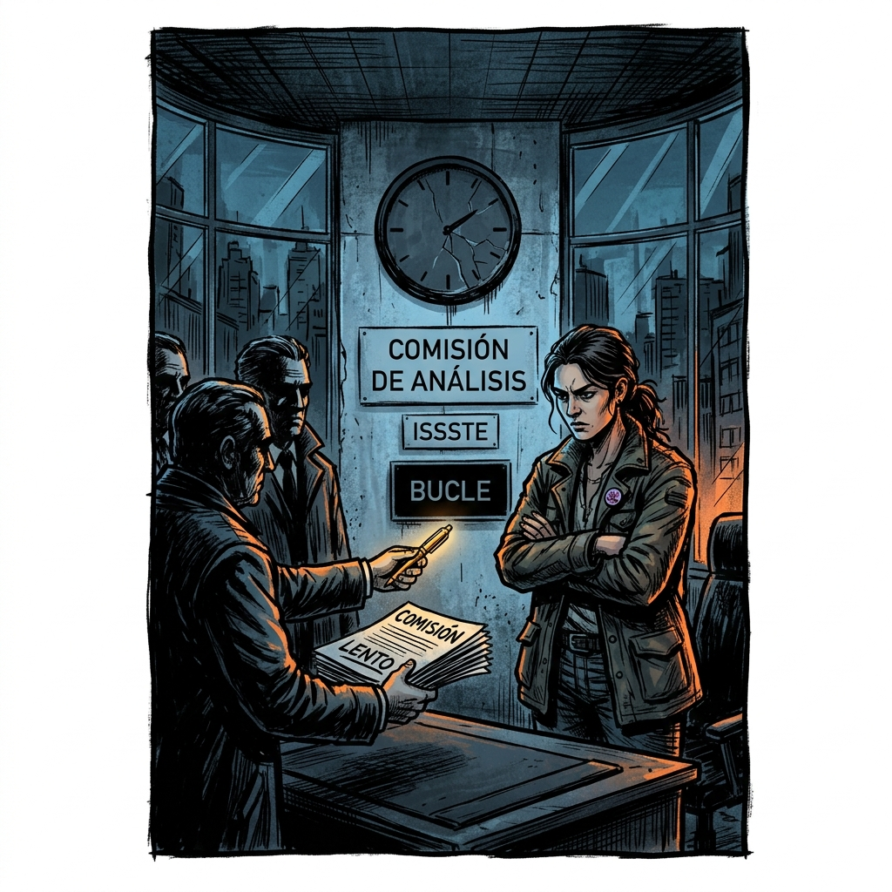
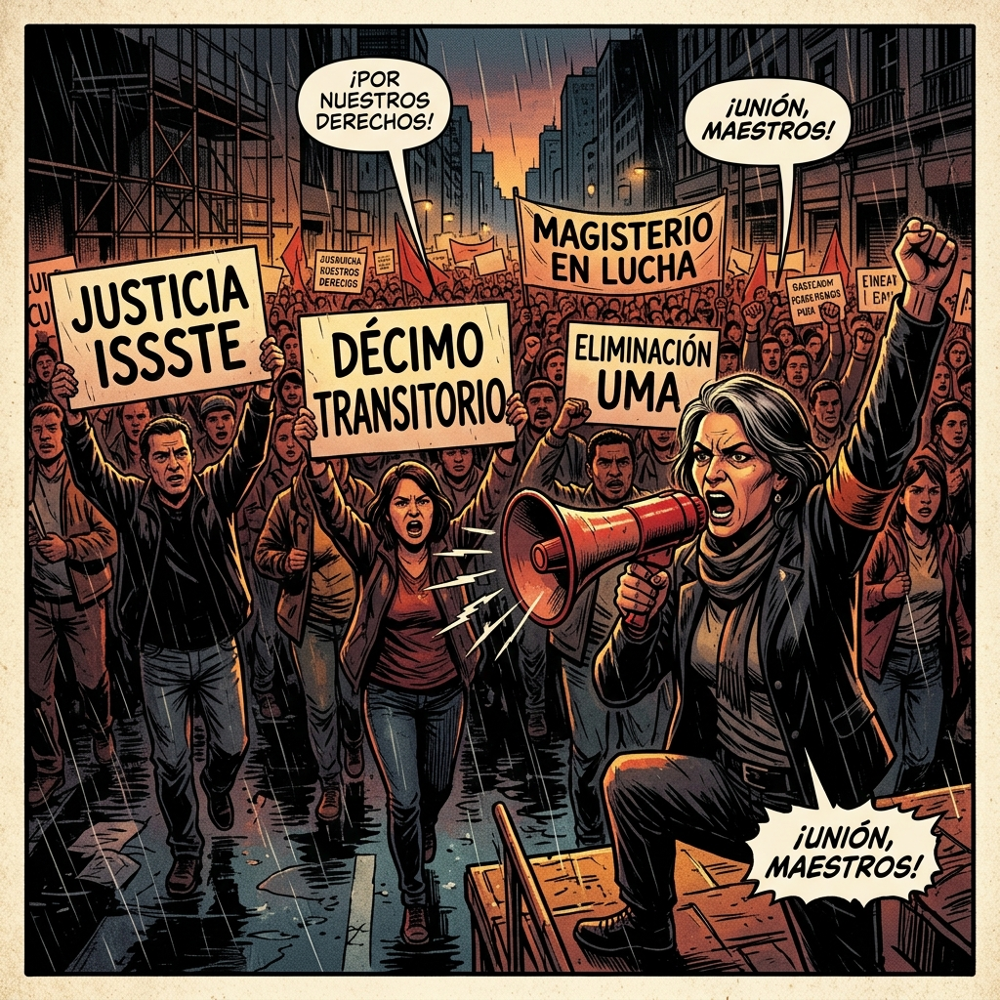
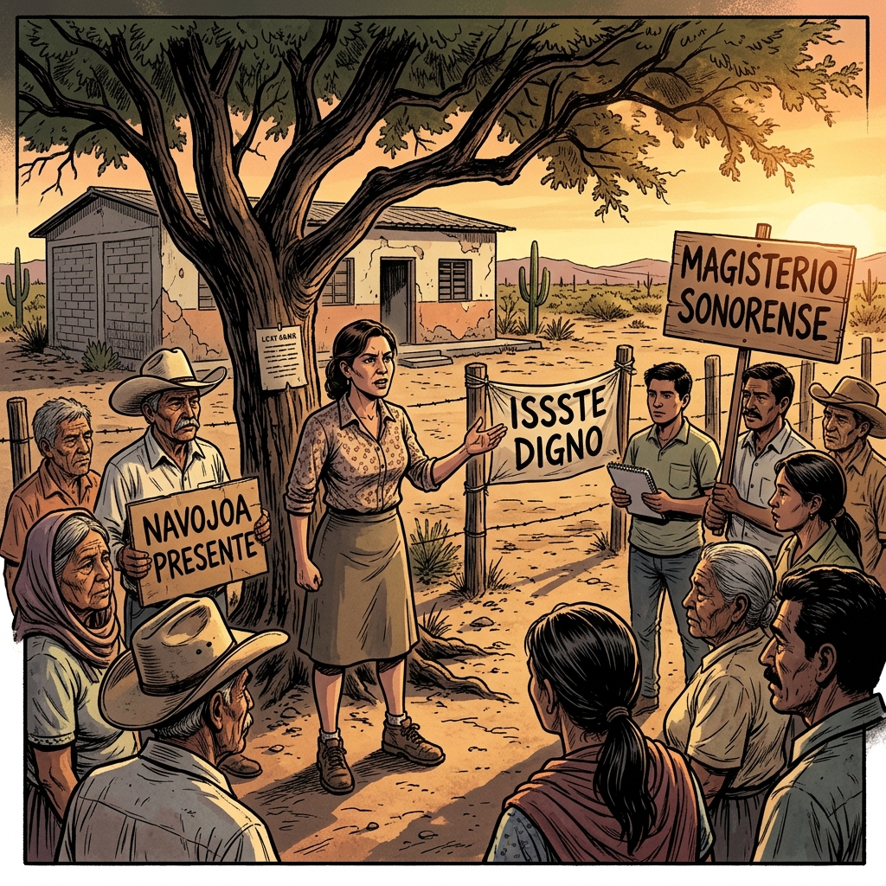
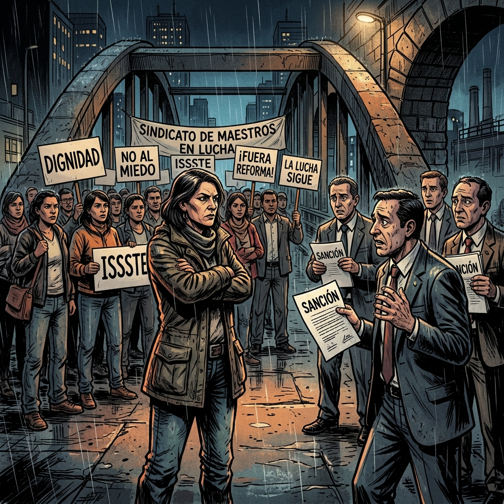
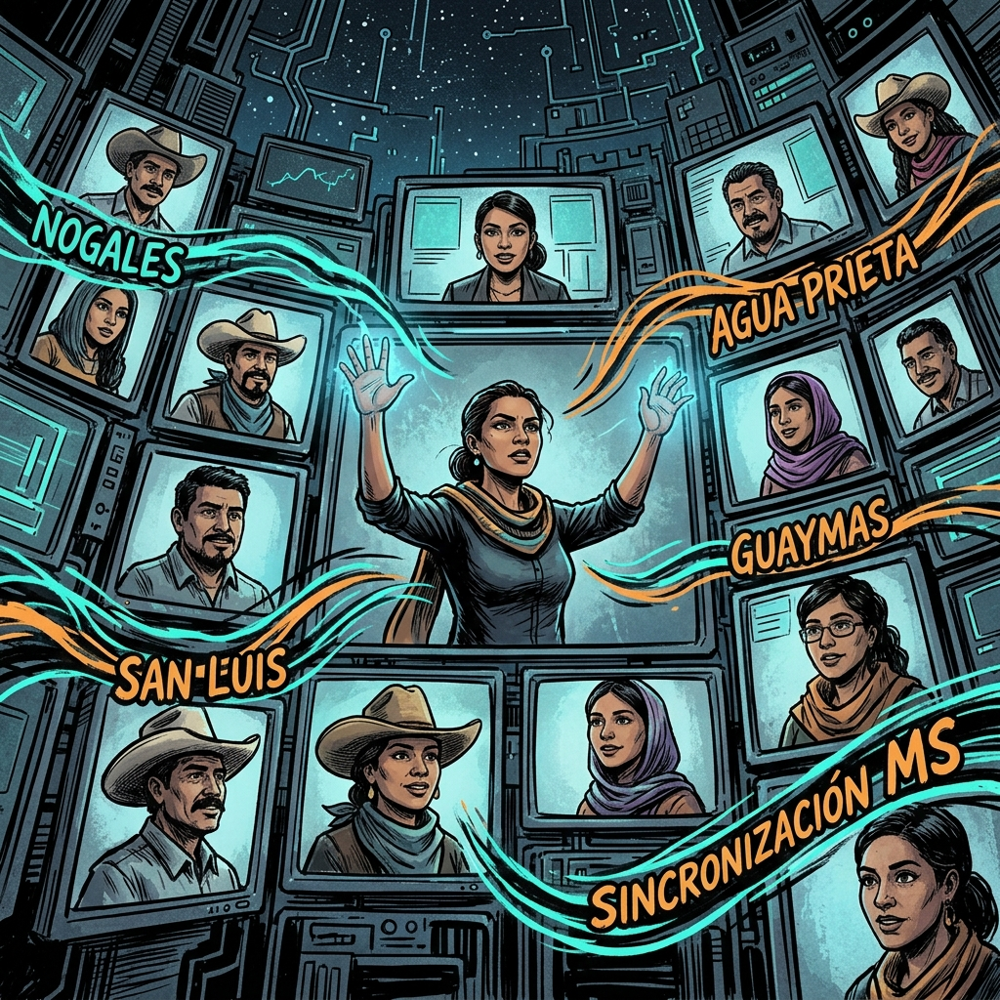
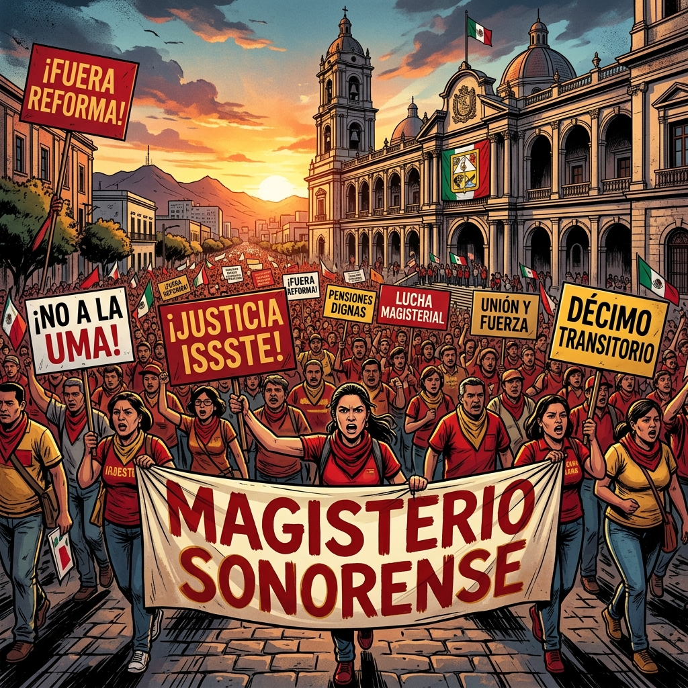

La Paradoja del Desierto
"La resistencia nace donde el sistema espera el olvido. Una historia de táctica, verdad y dignidad magisterial."

El Casino de la Agnotología
"En el Palacio, la ignorancia no es falta de saber, es un producto manufacturado. Te cuentan de bonos mientras devalúan tu retiro."

La Ciudad de los Espejismos
"En Obregón, la UMA es el lente que deforma la realidad. Te hacen creer que el dinero alcanza, mientras la inflación devora el futuro."

El Dilema del Jubilado
"La Agnotología del hospital: te distraen con propaganda mientras la farmacia del ISSSTE cierra sus puertas. El dilema es resistir o esperar el turno del olvido."

La Rebelión del Desierto Urbano
"La señal se sincroniza. Hermosillo y Obregón ya no son puntos aislados; son una red de conciencia que el sistema no puede apagar."

El Círculo de Novikov
"La trampa de las comisiones de análisis. El sistema intenta absorber la protesta en un bucle infinito donde nada cambia."

Congestión Cognitiva
"¡A las calles! Si no hay justicia en el talón de pago, habrá resistencia en el asfalto. El mensaje al gobierno y al sindicato es claro: se acabó el silencio."

Eco en los Ejidos
"Del sur al norte, la resistencia llega a Navojoa y al campo. Donde hay un maestro, hay una trinchera de la verdad federal."

El Juego del Gallina
"Frente a frente con la cúpula. Amenazan con sanciones, pero nosotros apostamos a la dignidad. ¿Quién parpadeará primero?"

El Grito Sincronizado
"Todas las delegaciones en una sola frecuencia. El jaque mate técnico a la fragmentación sindical."

Jaque Mate al Olvido
"La marea federal inunda Hermosillo. Rumbo al 1 de Mayo, la victoria de la conciencia es inevitable. ¡Resistencia Magisterial!"